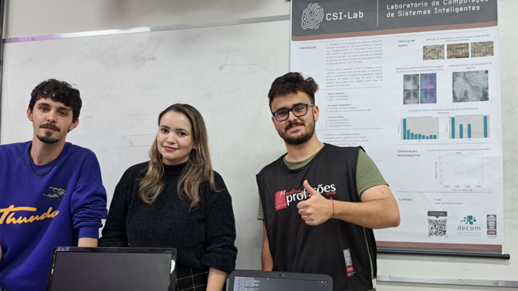
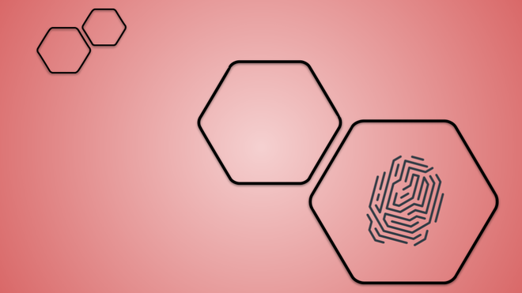
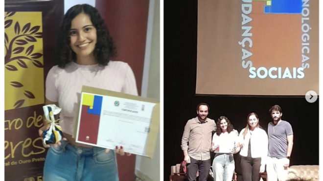
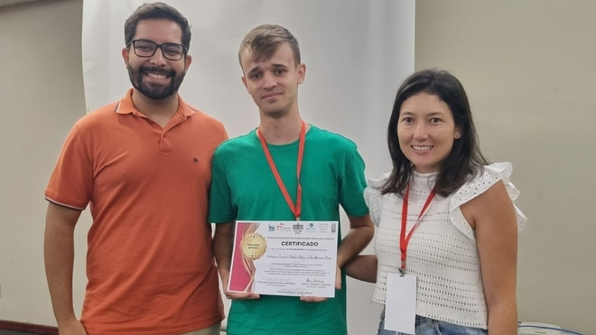

Avançando a fronteira da inteligência artificial, visão computacional, aprendizado de máquina e ciência de dados — da teoria à aplicação real.

Pesquisa de excelência em IA e sistemas inteligentes, com publicações em conferências e periódicos internacionais de prestígio.



O CSI Lab é o Laboratório de Computação de Sistemas Inteligentes da Universidade Federal de Ouro Preto (UFOP), vinculado ao Departamento de Computação (DECOM/ICEB).
Nossa missão é avançar a inteligência artificial, aprendizado de máquina, visão computacional, reconhecimento de padrões e ciências de dados, combinando excelência em pesquisa acadêmica com aplicações práticas de impacto social e industrial.
Desenvolvemos modelos e sistemas aplicados a saúde, finanças, meio ambiente e linguagem — com publicações em Springer, IEEE, SBC e ScienceDirect.
Colaboramos com empresas como EFI Bank, CGU, Embrapii e BDMG em projetos de P&D, transferindo conhecimento para a sociedade.
Do aprendizado profundo ao reconhecimento biométrico — nossos grupos de pesquisa cobrem as principais fronteiras da computação inteligente.
Modelos de IA aplicados a problemas de alta complexidade em saúde, finanças, linguagem e percepção ambiental.
Reconhecimento de padrões visuais, classificação de imagens, detecção de deepfakes e identificação biométrica.
Redes neurais profundas, aprendizado por transferência, self-supervised learning e arquiteturas eficientes (NAS).
Modelos de linguagem para o português, classificação de texto tóxico, reconhecimento de fala e otimização de prompts.
Análise de risco de crédito, detecção de fraude, churn prediction e séries temporais epidemiológicas.
Detecção de clusters espaciais, modelagem de COVID-19 com redes GNN e mobilidade urbana, vigilância epidemiológica.
Classificação de ECG, detecção de arritmias, segmentação de heartbeat e sinais cardíacos remotos por vídeo (rPPG).
Algoritmos evolutivos, detecção de comunidades em redes sociais e otimização de dispersão/concentração de soluções Pareto.
Nossos projetos nascem de questões reais e produzem resultados publicados nos melhores veículos internacionais — IEEE, Springer, SBC — além de código aberto disponível para a comunidade via GitHub.
Projetos de pesquisa aplicada com parceiros industriais e governamentais.
Dúvidas sobre candidaturas, pesquisa e parcerias com o laboratório.
Acompanhe as conquistas, participações em conferências e premiações do laboratório.
IX Escola Regional de Computação Aplicada à Saúde — prêmio de melhor artigo concedido a trabalho orientado pelo Prof. Eduardo Luz.
Categoria Ciências Exatas — melhor trabalho de iniciação científica da UFOP, reconhecendo pesquisa em aprendizado de máquina.
Código-fonte de todos os artigos publicados disponível em github.com/ufopcsilab.